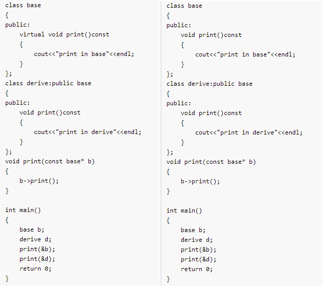

九章算法答案(上)
一
1. 实现一个memcpy函数。
//memcpy需要考虑内存重叠问题,memmove不需要考虑
void* memcpy(const void* src,void* dst,size_t size)
{
assert(src!=NULL && dst!=NULL);
if(size==0)
return src;
char* tmp=src;
if(dst<=src || (char*)dst>((char*)src+size))//from left to right
{
while(size--)
{
*(char*)dst++=*(char*)src++;
}
}
else//from right to left
{
src+=size-1;
dst+=size-1;
while(size--)
{
*(char*)dst--=*(char*)src--;
}
}
return (void*)tmp;
}
2. STL中vector的实现原理（衍生：Map/Set的实现原理）
vector即一个对象，含有_start,_end和_finish成员变量，这三个成员变量共同管理着一个堆上的数组空间。_start指向数组头，_end指向有效元素的尾部，_finish指向整个空间的尾部。可以向其中插入，删除，移动元素等。插入时，如果有足够的空余空间，则予以插入；否则开辟一块新的空间(长度是原来2倍)，将所有元素移动过去，将以上三个指针指向新的空间并释放原有空间，然后再插入元素即可。
3. 给定N张扑克牌和一个随机函数，设计一个洗牌算法。
假设扑克牌有54张，存放在card数组中。我们要保证的是每张扑克牌被洗过一次后不会被再次洗牌。所以我们可以使变量i从1循环到54，每次从第i张牌到第54张牌中选取一张，与第i张交换。
代码如下：
void shuffle(int card[],size_t n)
{
srand(time(NULL));//初始化随机数种子
int i;
int other;//另一张牌
for(i=0;i<n;++i)
{
other=i+rand()%(n-i);
std::swap(card[i],card[other]);
}
}
4. 25匹马，5个跑道，最少比多少次能比出前3名？前5名？
先看选出前3的算法：
- 先将25匹马分成5组分别比赛，对各组进行排名，且对各组的第一名进行一次比赛并排名。此时进行了6场比赛，假设A1>B1>C1>D1>E1,结果如下：
| 组别 | 第一名 | 第二名 | 第三名 | 第四名 | 第五名 |
|---|---|---|---|---|---|
| A组 | A1 | A2 | A3 | A4 | A5 |
| B组 | B1 | B2 | B3 | B4 | B5 |
| C组 | C1 | C2 | C3 | C4 | C5 |
| D组 | D1 | D2 | D3 | D4 | D5 |
| E组 | E1 | E2 | E3 | E4 | E5 |
此时A1为所有马中的第一名。同时，红色标注的马被淘汰，因为只能选出3匹，但他们明显进不了前三。
- 接下来正好剩下5匹马，让他们比赛一次，结果的第2,3名就是全部马匹中的2,3名。结束
可以看出，选出前3匹马至少需要7场比赛。
选出前5的算法：
- 同样令25匹马分成5组分别比赛，并对每组的第一名比赛一次，共6次，结果如下：
| 组别 | 第一名 | 第二名 | 第三名 | 第四名 | 第五名 |
|---|---|---|---|---|---|
| A组 | A1 | A2 | A3 | A4 | A5 |
| B组 | B1 | B2 | B3 | B4 | B5 |
| C组 | C1 | C2 | C3 | C4 | C5 |
| D组 | D1 | D2 | D3 | D4 | D5 |
| E组 | E1 | E2 | E3 | E4 | E5 |
此时A1为所有马中的第一名。同时，红色标注的马被淘汰，因为只能选出5匹，但他们明显进不了前五。
- 第7场比赛需要决出第二名。分析可知，第二名只可能在A2和B1中间产生。所以只需要A2和B1比赛一次就可以了。
- 角逐第三名时，如果A2>B1，则第三名可能出现在A3，B1。反之如果B1>A2，第三名可能出现在A2，B2,C1。。联想到第7场比赛中只用到了2条跑道，还有三条空余。所以我们可以将A2,A3,B1,B2,C1安排在第7场比赛中，结果的第2,3名一定是整个比赛的第2,3名。
- 接下来在第8场比赛中，
5.进程和线程有什么区别？
- 进程是程序的一个运行实例，是操作系统进行资源分配的基本单位，包括文件描述符、处理器资源、内存资源等；而线程是进程的一个实体，是操作系统进行调度的基本单位。
- 线程分为系统级线程和用户级线程。系统级线程可以被CPU感知并调度，可以发挥多核处理器的优势；用户级线程用用户自己实现调度，因此一个线程的阻塞会导致所有线程的阻塞，执行效率较低。而进程则无此分类。
- 进程拥有自己独立的地址空间，其地址由低到高分别为代码段，数据段，栈，共享区，堆，内核区。因此进程可以独立执行；而线程依附于某个进程中，有自己的栈空间，局部变量和一组寄存器，没有独立的地址空间，无法独立执行。因此一个进程崩溃后，在保护模式下不会对其他进程造成影响，但线程崩溃后会导致所处的整个进程崩溃。
- 因为以上原因，多进程的程序要比多线程的程序健壮，但在进程切换时，耗费资源较大，效率较低。
- 一个程序至少有一个进程，一个进程至少有一个线程。
另一种答案：
进程和线程具有很多类似的性质，因此人们称线程为轻量级进程，也是CPU调度和分派的基本单元；而传统意义上的进程称为重量级进程，从现代的角度看，它就是指拥有一个线程的进程。如果进程有多个控制线程，它就能同时执行多个任务(并发/并行)。
下面主要从调度、并发性、系统开销、拥有资源等方面对进程和线程进行比较。
调度：在传统的操作系统中，CPU调度和分派的基本单位是进程。而在引入线程的系统中，则把线程作为CPU调度和分派的基本单位，进程则作为资源拥有的基本单位，从而使传统进程的两个属性分开，线程便能够轻装运行，这样可以显著地提高系统的并发性。同一进程中线程切换不会引起进程切换，从而避免了昂贵的系统调用开销。但是在由一个进程中的线程切换到另一个进程中的线程时，依然会引起进程切换。
并发性：在引入线程的操作系统中，不仅进程间可以并发执行，而且在一个进程中的多个线程之间也可以并发送执行，因而使操作系统具有更好的并发性，从而能够有效地使用系统资源和提高系统的吞吐量。例如一个未引入线程的单CPU系统中，若仅设置一个文件服务进程，当它由于某种原因被封锁时，便没有其他文件服务进程来提供服务。在引入线程的系统中，可以在一个文件服务系统中设置多个服务线程。当第一个线程等待是，文件服务进程中第二个线程可以继续运行；当第二个被封锁时，第三个可以继续执行，从而显著提高了文件服务的质量以及系统的吞吐量。
体统开销：不论是引入线程的操作系统，还是传统的操作系统，进程都是拥有系统资源的一个独立单位。一般地说，线程自己不拥有系统资源(也有一点必不可少的资源)，但它可以穿访问所隶属进程的资源。亦即一个进程的代码段、数据段以及系统资源(如打开的文件，I/O设备等)，可供同一进程的所有其他线程共享。
拥有资源：由于在创建或撤销进程时，系统都要为之分配或回收资源，如内存空间，I/O设备等。因此操作系统所付出的开销将显著大于在创建线程时的开销。类似地，在进行进程切换时，涉及到整个当前进程CPU环境的保存以及新调度进程CPU环境的加载。而线程切换时只需要保存和设置少量寄存器的内容，并不涉及存储器管理方面的操作。可见，进程切换的开销也远远大于线程切合的开销。此外，由于同一进程中多个线程具有相同的地址空间，致使它们之间同步和通信的实现也比较容易。在有的系统中，线程的切换、同步和通信都无需内核的干涉。
6. 100亿个整数，内存足够，如何找到中位数？内存不足，如何找到中位数？
若内存足够，可将100亿个数进行排序，快排，堆排均可，取其中间数字即可。或者将其构建出一个AVL树或红黑树，取其顶部数字即可。
若内存不足，则可采取分而治之的方法，将100亿个数按其前5位分成32个桶，若还是不足以放入内存就继续分。统计每个桶中数字的个数，就可以知道中位数一定出现在那个桶中，因为桶是按照32位数的前5位分的，桶之间是排好序的。并且还可以知道中位数是这个桶中第几大的数。然后将这个桶中的数字排序即可。
二
1.请简述智能指针原理，并实现⼀个简单的智能指针。
智能指针即一个对象，可以用来管理其他对象动态分配出来的指针，并在该对象生命期结束时调用其析构函数来释放它。智能指针分为auto_ptr,scoped_ptr,shared_ptr,weak_ptr,instrusive_ptr,scoped_array,shared_array等。其中shared_ptr使用引用计数的原理。当初始化对象时，将引用计数设为1，增加引用时，对其加1，减少引用时减1.当引用计数减少到0时，自动调用它所管理对象的析构函数来释放该对象。
模拟实现shared_ptr:
template<typename T>
class Shared_ptr {
public:
Shared_ptr(T* ptr=NULL)
:_ptr(ptr)
{
if (_ptr == NULL)
_count = new int(0);
else
_count = new int(1);
}
Shared_ptr(const Shared_ptr<T>& other)
{
_ptr = other._ptr;
_count = other._count;
(*_count)++;
}
Shared_ptr& operator=(const Shared_ptr<T>& other)
{
_release();
_ptr = other._ptr;
_count = other._count;
(*_count)++;
return *this;
}
T& operator*()
{
return *_ptr;
}
T* operator->()
{
retrn _ptr;
}
~Shared_ptr()
{
_release();
}
protected:
void _release()
{
if (--*_count == 0)
{
delete _ptr;
delete _count;
_ptr == NULL;
}
}
private:
T* _ptr;
int* _count;
};
2. 如何处理循环引用问题？
当可能会发生循环引用时，只需要让循环的一方持有弱指针，即weak_ptr即可。
3. 请实现⼀个单例模式的类，要求线程安全。
我的实现：
template<typename T>
class singleton {
public:
T* GetInstance()
{
if (_ptr == NULL)//加锁是个很耗时的过程，先判断可以减少加锁的次数
{
_lock.lock();//加锁
if (_ptr == NULL)
_ptr = new T();
_lock.unlock();//解锁
}
return _ptr;
}
static void DelInstance()
{
_lock.lock();
if (_ptr != NULL)
{
delete _ptr;
_ptr = NULL;
}
_lock.unlock();
}
private:
singleton();
static mutex _lock;//C++11 互斥锁
static T* _ptr;//要求只能创建一个对象，所以需要将_ptr和_lock都设置为static
};
template<typename T>
mutex singleton<T>::_lock;
template<typename T>
T* singleton<T>::_ptr = NULL;
mutex g_lock;
void fun()
{
g_lock.lock();
cout << "thread1_id:" << this_thread::get_id() << endl;
g_lock.unlock();
singleton<int>* s=NULL;
int*p=s->GetInstance();
int i=0;
while (i++ < 5000)
{
g_lock.lock();
(*p)++;
g_lock.unlock();
}
g_lock.lock();
cout << "thread1:" << *p << endl;
g_lock.unlock();
s->DelInstance();
}
void fun1()
{
g_lock.lock();
cout << "thread2_id:" << this_thread::get_id() << endl;
g_lock.unlock();
singleton<int>* s=NULL;
int*p=s->GetInstance();
int i=0;
while (i++ < 5000)
{
g_lock.lock();
(*p)++;
g_lock.unlock();
}
g_lock.lock();
cout << "thread2:" << *p << endl;
g_lock.unlock();
s->DelInstance();
}
int main()
{
thread t(fun);
thread t1(fun1);
t.join();
t1.join();
return 0;
}
经典实现：
class Singleton
{
public:
// 获取唯一对象实例的接口函数
static Singleton* GetInstance()
{
// 使用双重检查，提高效率，避免高并发场景下每次获取实例对象都进行加锁
if (_sInstance == NULL)
{
std::lock_guard<std::mutex> lck(_mtx);
if (_sInstance == NULL)
_sInstance = new Singleton();
}
return _sInstance;
}
// 删除实例对象
static void DelInstance()
{
std::lock_guard<std::mutex> lck(_mtx);
if (_sInstance)
{
delete _sInstance;
_sInstance = NULL;
}
}
void Print()
{
cout<<_data<<endl;
}
private:
// 构造函数定义为私有，限制只能在类内创建对象
Singleton()
:_data(0)
{}
// 指向实例的指针定义为静态私有，这样定义静态成员函数获取对象实例
static Singleton* _sInstance;
// 保证线程安全的互斥锁
static mutex _mtx;
// 单例类里面的数据
int _data;
};
Singleton* Singleton::_sInstance = NULL;
mutex Singleton::_mtx;
void TestSingleton()
{
Singleton::GetInstance()->Print();
Singleton::DelInstance();
}
4.如何定义一个只能在堆上生成对象的类？
先来看看类对象的生成方式：
- 在栈上：由编译器在栈上通过移动栈顶指针来分配空间，然后调用构造函数来构造。
- 在堆上：new关键字先调用operator new()函数来分配空间，之后调用构造函数来构造。 所以，要使对象只能在堆上生成，就要使编译器不能自动调用类的构造和析构函数，所以我们可以将他们声明为私有的。然而将构造函数设为所有之后，会导致new操作符不能调用类的构造函数，从而也不能在堆上构造了。所以只能将析构函数声明为私有。进而我们需要提供一个destroy函数来析构对象，用户使用完对象后，必须调用该函数，否则可能会导致内存泄露。 还有一个问题，将析构函数设为私有会导致该类无法作为基类。因为基类的析构函数一般都声明为virtual，以便于派生类重写它以实现多态。而析构函数的访问属性为private是无法被重写的。所以需要将析构函数的访问属性设为protected。
5.如何定义一个只能在栈上生成对象的类？
由上题可知，要使对象只能在栈上分配，需要限制其不能在堆上分配。可以从在堆上生成对象的两个步骤入手。
- 限制构造函数的调用。将构造函数设为private后，会导致在堆和栈上都不能生成对象了，所以不行。
- 使编译器不能调用operator new()函数。可以。因为我们可以重载operator new()函数。
综上，可以将operator new()函数和operator delete()函数重载为类的私有成员函数，即可解决该问题。
6.下面的结构体大小分别是多大？(假设为32位机器)
struct A
{
char a;
char b;
char c;
};
struct B
{
int a;
char b;
short c;
};
struct C
{
char b;
int a;
short c;
};
#pragma pack(2)
struct D
{
char b;
int a;
short c;
};
sizeof(A)=3;
sizeof(B)=8;
sizeof(C)=12;
sizeof(D)=8;
结构体内存对齐规则：
-
每个成员变量必须存放在整数倍于自己大小的内存地址处；
-
整个结构体的大小必须是最大字节的整数倍。
7.引用和指针的区别？
- 引用必须定义即初始化，指针可以先定义，在赋值；也可以定义即初始化。(注意初始化和赋值的区别)。
- 指针拥有自己的内存空间,它的值指向令一块内存。引用则没有，只是它所引用对象的一个别名。
- 指针使用时需要解引用，而引用无需解引用就可以使用。
- 引用不能为空，指针可以。
- “sizeof 引用”得到的是对象的大小，“sizeof 指针”得到的是指针本身的大小。 typeid(T)==typeid(T&)恒为真，sizeof(T)==sizeof(T&)恒为真。但当引用作为类成员时，其占用的空间与指针相同。
- 指针和引用的自增运算符意义不同。
- 不能有NULL引用，但可以有NULL指针。
- 可以有const指针，没有const引用。
- 可以有二级指针或多级指针，但没有二级引用。
作为函数参数传递时，引用和指针都可以修改原对象。但指针传递的是指针本身的拷贝，而引用传递的是实参本身，因而使用引用做参数不仅可以节约时间，也可以节约空间。
- 引用在底层是使用指针实现的，二者在汇编层面上完全一致。如下 <src="/image/56292c42-1.png" width=100% height=100%>
8.const和define的区别？
- const是关键字，define是宏定义命令。
- const定义的是变量，有确定的内存地址，并且是常变量。而define只是简单的替换，无内存地址。
- const有类型检查机制，define没有。
- const常量存放于数据段，define常量存放于代码段。
9.define与inline的区别？
- 宏define在预处理阶段完成；inline在编译阶段。
- inline标示的是函数，有类型安全检查和参数匹配检查。可以进行调试。宏无法进行调试。
- define是字符串替换；inline指嵌入代码，在编译过程中不单独产生代码，在调用函数的地方不是跳转，而是直接把代码写入，所以没有调用开销。对于短小的函数比较实用。
- inline只是对编译器的建议；而define是强制替换；
10.malloc和new的区别？
- malloc在堆上分配空间，而new在自由存储区上分配；(自由存储区是C++基于new操作符的一个抽象概念，凡是通过new操作符进行内存申请，该内存即为自由存储区。)
- malloc是库函数，new是C++中关键字；
- new底层调用了operator new函数，而该函数调用了malloc；
- 可以用new[]开辟一个数组，但malloc只能开辟一段空间；
- malloc和new都返回一个指针，但malloc失败时返回NULL，new则抛出bad_alloc异常；
- malloc需要手动计算要开辟的空间大小，new则会自动计算；
- malloc返回值类型是void*，new返回的是指向实际类型的指针；
- new开辟空间后，会调用对象的构造函数，delete会调用析构函数后在释放空间；malloc不会调用，只分配空间；
- operator new()和operator delete()可以重载；
- malloc后，可以用realloc重新分配空间，new不可以；
- operator new抛出异常之前，会先调用一个指定的错误处理函数new_handler；
11.C++中static关键字的作用？
- 声明函数或变量的可见性为本文件，即对外隐藏；
- 声明变量的存储类型为全局的，存储在全局数据区，即具有全局生存期；
- static变量和全局变量都默认初始化为0；
- 用于C++的类中时，static变量属于类而不属于对象，需要手动初始化；static函数没有this指针，所以只能访问类的static变量和static函数。
12.C++中const关键字的作用？
- 用于变量时，表明该变量时只读的；
- 用于函数时返回值和参数时，表明该值只读，不可改变；
- 用于成员函数时，表明该函数不改变类的成员变量；
13.C++中包含哪几种强制类型转换？他们有什么区别和联系？
- static_cast：允许执行任意的隐式转换和反转换动作。应用到类上，它允许子类的指针转换为父类的指针，也可以反过来转换(虽然不合法，但static_cast不检查这个动作的合法性)。
- const_cast：只能去掉或加上一个对象的const属性或volatile属性；
- dynamic_cast：只用于对象的指针和引用。当用于多态类型时，它允许任意隐式类型转换及相反动作，不过dynamic_cast会检查操作是否有效。检测在运行时进行，是动态的；其他三种都在编译时进行，是静态的。
- reinterpret_cast ：转换一个指针为其他类型的指针。也允许一个指针到整数的转换，不过这是有编译器决定的，具有系统相关性。
三.C++基础(下)
1. 下面两段代码的输出分别是什么？

左边代码输出：
Print in Base
Print in Derive
右边代码输出:
Print in Base
Print in Base
2.简述C++虚函数作用及底层实现原理。
- 作用：为了实现面向对象的多态机制。当基类的指针或引用指向派生类对象时，可以通过该指针来调用派生类的对应的函数，从而实现多态。
- 实现原理：一个字，虚表。当类中有虚函数时，编译器会自动在该类对象的首地址处插入一个虚表指针_vptr(linux)或__vfptr（Windows)。当基类指针指向派生类对象时，会发生“切割”，但此时如果派生类中的函数对基类中函数发生了“隐藏”的话，会导致虚表中的函数地址被派生类覆盖。从而调用的就是派生类的函数，这就实现了多态。
3.一个对象访问普通成员函数和虚函数哪个更快？
普通成员函数更快。因为访问虚函数时，需要先根据虚表指针找到虚表，然后取其地址并访问。而普通成员函数没有这些步骤。
4.在什么情况下，析构函数需要使虚函数？
当该类作为基类被继承时，需要将析构函数设为虚函数，否则当使基类指针指向派生类时，通过该指针析构派生类对象，只能调用基类的析构函数，无法调用派生类析构函数。当在派生类中进行了内存分配、文件打开、资源获取、网络IO、数据库打开等操作时，会导致内存泄露或其他问题。而将基类的析构函数设为虚函数后，实际调用的是派生类的析构函数(派生类析构函数覆盖了基类的析构函数)，而要析构派生类，编译器会自动先调用基类的析构函数，然后再调用派生类的。所以此时不会有上述问题。
5.内联函数、构造函数、静态成员函数可以是虚函数吗？
都不可以！
- 内联函数在编译器被展开，而虚函数在运行时确定具体要调用的函数。而在运行时可能已经不存在该内联函数了。
- 如果构造函数是虚函数，需要在虚表中去找该对象对应的构造函数，而此时该对象还不存在，如何去找？
- 静态成员函数是属于类的，所有对象共享同一份代码，没有必要动态确定。
6.构造函数中可以调用虚函数吗？
在语法层面可以调用，但强烈不建议这样做！根据《effective C++》条款9所言，如果在构造函数中调用了虚函数，且该类作为基类使用的话。在构造派生类对象时，会首先构造基类对象，而此时该对象的类型是基类类型，调用的是基类的虚函数。而虚函数的本意是想调用派生类的虚函数。
7.简述C++中虚继承的作用及底层实现原理？
虚继承的出现，是为了解决菱形继承的问题的。所谓菱形继承，就是两个类都继承了同一个类，而这两个类又共同派生出一个类。如下：
class base{};
class base1:public base{};
class base2:public base{};
class derived:public base1,public base2{};
这样的话，base中的数据在derive的类中就存在了两份，这样不仅导致数据冗余，浪费空间，还有二义性的问题。
所以出现了虚继承，即在派生base1和base2时加一个virtual关键字而已。如下：
class base{};
class base1:public virtual base{};
class base2:public virtual base{};
class derived:public base1,public base2{};
具体细节和内存布局这里不讲，具体可参考我的另一篇博文:继承体系下的C++对象模型